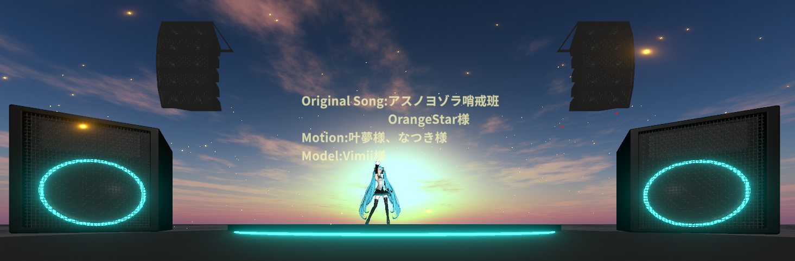
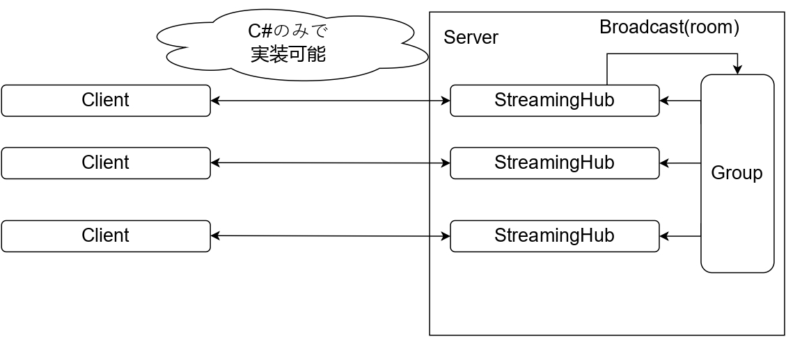

Unityを用いて制作したVRライブシステムです。大学の授業にて制作、披露しました。
MagicOnion
を使用してサーバクライアント方式の通信を実装しました。
{% include video id="1iLxD3updq1jctw6h63FvB5fBlDj3Wi0E" provider="google-drive" %}
サーバクライアント方式の通信の概念図は以下のようになっています。MagicOnionを使用することによって、C#のみで実装しています。

こちらのリポジトリ
にサーバ用のC#プロジェクトがあります。
また、
こちらのリポジトリ
にクライアント用の通信に関わる部分のコードがあります。